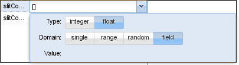

Tutorial 1: The Belousov–Zhabotinsky reaction
In this tutorial we will implement the Oregonator
model of the famous Belousov-Zhabotinsky
reaction, a nice example of a nonlinear reaction-diffusion system that
displays complex patterns. Details of the Inchman implementation of this
model, and the scientific background for it, can be found in our publication
Stochastic
Simulations
of Pattern Formation in Excitable Media.
The Oregonator model consists of the reaction scheme
$$
\begin{eqnarray} Y & \xrightarrow{k_1} & X + R \\ X+Y &
\xrightarrow{k_2/\Omega^3} & 2 R \\ X & \xrightarrow{k_3} & 2 X
+ 2 Z \\ 2 X & \xrightarrow{k_4/\Omega^3} & R \\ Z &
\xrightarrow{k_5} & Y^\ast + Y^{\ast\ast}\\ 2 Y^\ast &
\xrightarrow{k_6} & Y \\ 2 Y^{\ast\ast} & \xrightarrow{k_7} &
Y^\ast \\ \end{eqnarray} $$
for the reactants \(X\), \(Y\), \(Z\), the helper species \(Y^\ast\) and
\(Y^{\ast\ast}\) and the remainder species \(R\). The helper species are
introduced to avoid fractional stoichiometries, which Inchman does not
support currently. The parameter \(\Omega\), which mimics the epxansion
parameter in the \(\Omega\)-expansion, will be used to scale the overall
species number and hence demonstrate the transition between a stochastic and
a pseudo-deterministic setting. Please refer to the original paper for more
details on the reaction system, our implementation, pattern formation and
the \(\Omega\) expansion.
We start the project by pointing our browser to the Inchman editor, which is
located at inchman-editor.appspot.com.
We call the model "Oregonator", set the grid width to 64 and the physical
length to \(0.54 \mu m\). We need the stochastic homogeneous solver. The
maximum run time is 5 seconds and we only perform one run.
The next step is to define the spatial compartments. We will set our initial
conditions to create a spiral wave using a Python script so, for now, we
only need the compulsory World compartment. We add it using the  button in the compartment
list.
button in the compartment
list.
We now add the required species. Remember that we need six species in total:
\(X\), \(Y\), \(Z\), the helper species \(Y^\ast\) and \(Y^{\ast\ast}\) and
the remainder species \(R\). None of the species should be treated as
individuals so we uncheck this box. We set the diffusivity for species \(X\)
to a parameter \(D\) and the diffusivity for \(Z\) to \(0.6 D\). Remember
that you will need to enter the term "0.6 * D" in the diffusivity box to
achieve that (you can get to the diffusivity box by clicking on the
diffusivity in the species list):
The final species list should look like this:
It is now time to enter the reactions from above. By now, this procedure
should be straight-forward. Keep in mind, that reactions of the form \( 2
Y^\ast \rightarrow Y \) will have a kinetic law of \( k Y^\ast (Y^\ast-1)\).
This is how you enter a term containing the scale parameter \(\Omega\) into
the reaction field:
The final reaction tab should look similar to this one:
We set the parameters to the values of Table 6 from the research paper:
Finally, we need to trigger the formation of a spiral wave using the initial
conditions. This is done by initializing a wedge-shaped perturbation in the
field. Again, we ask you to consult the research paper for details on this.
This tutorial only focuses on how to implement it in Inchman. The initial
conditions are set in the "Initialization" tab of the editor. This tab
accepts a Python script which looks as follows:
import numpy
import sys
import math
# extract some parameters we need
nx = runtimeInformation['nx']
ny = runtimeInformation['ny']
nSpecies = runtimeInformation['nspecies']
scale = parameters['Omega']
k1 = parameters['k1']
k2 = parameters['k2']/scale
k3 = parameters['k3']
k4 = parameters['k4']/scale
k5 = parameters['k5']
k6 = parameters['k6']
# make a numpy array out of it
if (runtimeInformation['solver']=='stochastic_homogeneous'):
# we have a stochastic simulation going
print "Detected stochastic simulation!"
numpy_state = numpy.array(state, copy=False)
else:
# this is for the deterministic simulation
print "Detected deterministic simulation!"
numpy_state = numpy.array(deterministicState, copy=False)
# reshape the array
np_state_new = numpy_state.reshape(nSpecies, nx, ny)
# zero the array
np_state_new[:,:,:] = 0
#Initialize the "wedge"
# create coordinate system
xc=range(-nx/2, ny/2)
yc=range(-nx/2, ny/2)
gxc=numpy.outer(xc, numpy.ones_like(xc))
gyc=numpy.outer(numpy.ones_like(yc), yc)
theta = numpy.arctan2(gyc, gxc) + numpy.pi
# create float arrays (for stochastic sim)
nsf = numpy.zeros(numpy.shape(np_state_new), dtype=float)
q = 0.002;
f = 1.5;
uss = 0.5*(1.-(f+q)+numpy.sqrt((f+q-1.)**2+4.*q*(1.+f)))
tindex = numpy.where(theta<0.5)
nsf[species['X'], :, : ] = uss
nsf[species['X'], tindex[0], tindex[1] ] = 0.8
# v = vss + theta/(8 pi f)
nsf[species['Z'], :, : ] = uss + theta/(8.*numpy.pi*f)
# and for Y we take the dynamic equilibrium value
nsf[species['Y'], :, :] = f * nsf[species['Z'], :, : ]/(q + nsf[species['X'], :, : ])
# and convert all to dimensional values
np_state_new[species['X'], :, : ] = nsf[species['X'], :, : ] / (2.*k4/k3)
np_state_new[species['Y'], :, : ] = nsf[species['Y'], :, : ] * (k3/k2)
np_state_new[species['Z'], :, : ] = nsf[species['Z'], :, : ] / (k5*k4/k3**2)
You can copy and paste this part into the initialization tab of the editor
window.
We go through the code step by step. The first snippet loads some useful
modules and extracts the simulation parameters from the global namespace.
Note that simulation internal parameters (such as the grid parameters) are
specified in the dictionary runtimeInformation while the
user-defined parameters live in parameters
import numpy
import sys
import math
# extract some parameters we need
nx = runtimeInformation['nx']
ny = runtimeInformation['ny']
nSpecies = runtimeInformation['nspecies']
scale = parameters['Omega']
k1 = parameters['k1']
k2 = parameters['k2']/scale
k3 = parameters['k3']
k4 = parameters['k4']/scale
k5 = parameters['k5']
k6 = parameters['k6']
The next part converts the general memory pointer to a numpy array (Numpy
is a Python library to deal with arrays). The parameters nSpecies, nx and ny were
previously extracted from the runtimeInformation array.
# make a numpy array out of it
if (runtimeInformation['solver']=='stochastic_homogeneous'):
# we have a stochastic simulation going
print "Detected stochastic simulation!"
numpy_state = numpy.array(state, copy=False)
else:
# this is for the deterministic simulation
print "Detected deterministic simulation!"
numpy_state = numpy.array(deterministicState, copy=False)
# reshape the array
np_state_new = numpy_state.reshape(nSpecies, nx, ny)
# zero the array
np_state_new[:,:,:] = 0
To set up a regular-grid coordinate system which originates in the center cell you can use this snippet:
# create coordinate system
xc=range(-nx/2, ny/2)
yc=range(-nx/2, ny/2)
gxc=numpy.outer(xc, numpy.ones_like(xc))
gyc=numpy.outer(numpy.ones_like(yc), yc)
The arrays gxc and gyc will now contain a
regular grid, which you can use to set up your initial conditions.
The last bit initializes the wedge by setting the arrays for the species
individually. There is some Numpy magic going on here and we won't go into
the details of this. If you're interested, read up about Python and Numpy!
However, the general way to set a species array is exemplified here:
np_state_new[species['X'], :, : ] = ...
If your initial condition is fairly easy, you can use that as a template.
You can now save the model to your harddrive or directly simulate it by
clicking on the simulate button! Depending on your hardware, this might take
some time, in particular if the scale parameter \(\Omega\) is high.
Once the simulation is finished we can analyze the results. The simulation output is stored
in an HDF5 file. HDF5 readers are available for
Matlab, Mathematica and various programming languages. For interactive sessions, we use
the Python modules which come with Inchman.
After starting Python, we first load the Inchman input/output module along with Numpy and Matplotlib.
Python 2.7.5 (default, May 12 2013, 12:00:47)
[GCC 4.8.0 20130502 (prerelease)] on linux2
Type "help", "copyright", "credits" or "license" for more information.
>>> import gpgmp.io
>>> import matplotlib.pyplot as plt
>>> import numpy
The io module reads out the results from the HDF5 file and converts it into Numpy arrays.
>>> n, times, species, nspecies = gpgmp.io.read_gmp_hdf5('output')
The output time stamps are stored lexically so we first need to sort them numerically:
>>> tind = numpy.argsort(times)
>>> times[tind[-1]]
50.0
The species array tells us at which index a particular species is. We would like to plot species X:
>>> species
array(['X', 'Y', 'Z', 'YS', 'YSS', 'R'], dtype=object)
>>> plt.imshow(n[0,tind[-1],0,:,:])
>>> plt.show()
If everything went correctly, your output should show a nice spiral similar to this one:

Tutorial 2: Cell migration of neurons in the brain
This tutorial is build around an application from mathematical biology. The question we are addressing here
is how a signalling molecule, Slit, affects migrating neurons in the brain. Details about the biological
background and the reasoning behind our implementation can be found in our research paper.
The main ingredient of our model are the migrating cells which move according to the stochastic differential equation
$$
\mathrm{d} \mathbf{X}_t= - \mathbf{\nabla} d(\mathbf{X}_t) \, \mathrm{d}t +\left[2 d(\mathbf{X}_t)\right]^{1/2} \mathbf{I} \, \mathrm{d} \mathbf{W}_t,
$$
i.e. the drift and diffusivity can be derived from a single scalar function
$$
d(s,u) = d_\mathrm{cc}(u) d_\mathrm{cs}(s) = D_0 \frac{A}{A+u} \exp(-\beta s),
$$
which combines the cell-cell interaction \(d_\mathrm{cc}(u)\) and the cell-Slit interaction \(d_\mathrm{cs}(s)\). \(u\) denotes the local concentration of the cells while \(s\) refers to the Slit concentration. We assume that, in the experiment, the Slit concentration attained a steady state and can be described by
$$
s(x) = \left\{
\begin{array}{rl}
0, & 0 \le t < t_a, \\
s_0\ \mathrm{exp}(-\lambda |x-L|), & t \ge t_a,
\end{array}
\right.
$$
where \(t_a\) denotes the time when slit is applied to the experiment.
We start by setting up the experiment parameters, the World compartment and the species (Slit):
 Note that we have two field parameters here:
Note that we have two field parameters here: slitConcentration and slitConcentrationD which describe the concentration of Slit and its derivative in the x-direction. Parameters can be marked as field parameters by selecting the according button in the domain window:

We initialize the species array by setting up a circular explant in the center of the domain:
# This python code snippet serves to initialize the species array
import numpy
# extract some parameters we need
nx = runtimeInformation['nx']
ny = runtimeInformation['ny']
length = runtimeInformation['le ngth']
nSpecies = runtimeInformation['nspecies']
# make a numpy array out of it
if (runtimeInformation['solver']=='stochastic_inhomogeneous') or (runtimeInformation['solver']=='stochastic_homogeneous'):
# we have a stochastic simulation going
numpy_state = numpy.array(state, copy=False)
else:
# this is for the deterministic simulation
numpy_state = numpy.array(deterministicState, copy=False)
# reshape the array
np_state_new = numpy_state.reshape(nSpecies, nx, ny)
# set background
ntemp = np_state_new[species['Cells'],:,:]
ntemp[:,:] = 0
# concentration (from Cai)
hcai = 5. # 5 mum is the cell size
h = length/float(nx)
u0 = 14./hcai**2
# compute coordinate system
xc=numpy.mgrid[-nx/2:nx/2]/float(nx)*length
yc=numpy.mgrid[-nx/2:nx/2]/float(nx)*length
gxc=numpy.outer(numpy.ones_like(xc), xc)
gyc=numpy.outer(yc, numpy.ones_like(yc))
rs = gxc**2+gyc**2
# and set explant value in the middle
r0 = 100.
ntemp[numpy.where(rs<=r0**2)] = u0*h**2
# finally we need to set the field variables
lambd = parameters["lambda"]
L = length/2.
slitConcentration = (numpy.array(parameters["slitConcentration"], copy=False)).reshape(nx,ny)
slitConcentration[:,:] = numpy.exp(-lambd*(L-gxc))
slitConcentrationD = (numpy.array(parameters["slitConcentrationD"], copy=False)).reshape(nx,ny)
slitConcentrationD[:,:] = lambd*numpy.exp(-lambd*(L-gxc))
The field variables are set in lines 41-47. They are extracted from the parameters array (note the copy=False keyword which prevents numpy from allocating new memory for the array) and reshaped according to the grid specifications.
The interesting part is now to compute the drift and diffusivity, as it involves taking the gradient of the interaction term \(d(s,u)\), which in turn depends on the Slit concentration and the Cell count. The code to achieve this needs to go into the Drift/Diffusivity-method tab and we go through it step by step.
We first define some parameters that we will need later. Note that lambda, beta and D were defined in the interface already so they are available here.
// Compute sub-volume size
Real subVolume = PhysicalCellWidth*PhysicalCellHeight;
// Compute parameters
Real L = PhysicalModelWidth/2.;
Real a = 0.02*subVolume;
Real ta = 24.*3600.;
Real xi = 1e4/3600.;
// lambda, beta, and D are available from the interface
We then test if Slit has been applied to the experiment already. We can do that by checking the current simulation time, which is given in PhysicalSimTime against the interface parameter ta:
// Is slit switched on already? We test against the variable
// PhysicalSimTime which gives the current simulation time
Real s0 = (PhysicalSimTime > ta) ? 1 : 0;
We now compute the diffusivity and drift in the x direction. The drift is given by \(\partial_x d[u(x), s(x)]\) so we need to compute the local derivatives \(\partial_x u(x,t)\) and \(s'(x)\). The derivative of the Slit concentration is time-independent and we can use the pre-computed value found in the field variable slitConcentrationD. However, the local cell concentration obviously changes with time. In order to compute it, we use the built-in function getCentralDifferenceX(<species>). Note that, in order to get the partial derivative, we still need to divide by twice the cell width (you can look at the wikipedia article about central differences for an explanation).
// the slit concentration and its derivative is also
// available as the field variables slitConcentration and slitConcentrationD
// (we set them in the initialization method)
// Compute a+u (where u is the current cell count in the subvolume)
Real apu = a + Cells->State;
Real a0 = a*D*exp(-beta*s0*slitConcentration);
// We use the provided helper function to compute the central difference
Real up = getCentralDifferenceX(Cells)/(2.*PhysicalCellWidth);
Real sp = s0*slitConcentrationD;
// set diffusivity/drift in X direction
Cells->DriftX = -a0/(apu*apu) * (beta * apu * sp + up);
Cells->DiffusivityX = a0/apu;
Finally, we need to set it up for the y-direction. This is easier since there is no gradient of the Slit concentration in this direction and we only have to consider cell-cell interaction.
// for the y-direction we don't use the slit field, only population pressure
Real uprimey = getCentralDifferenceY(Cells)/(2.*PhysicalCellHeight);
Cells->DriftY = -D*a*uprimey/(apu*apu);
Cells->DiffusivityY = D*a/apu;
The model specification is now complete and we can go ahead and simulate it. Depending on your computer, it should not take too long for the simulation to finish.
We can then plot it as in the previous tutorials.
Python 3.3.2 (default, May 21 2013, 15:40:45)
[GCC 4.8.0 20130502 (prerelease)] on linux
Type "help", "copyright", "credits" or "license" for more information.
>>>
>>> import gpgmp.io
>>> n, times, species, nspecies = gpgmp.io.read_gmp_hdf5('/home/matthias/xibalba/temp/results/output')
>>> import numpy
>>> import matplotlib.pyplot as plt
>>> tind = numpy.argsort(times)
>>> plt.imshow(n[0,tind[-1],0,:,:])
>>> plt.show()
>>>
You should get a picture similar to Figure six in the research paper: